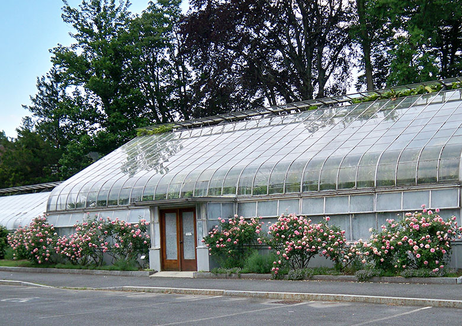
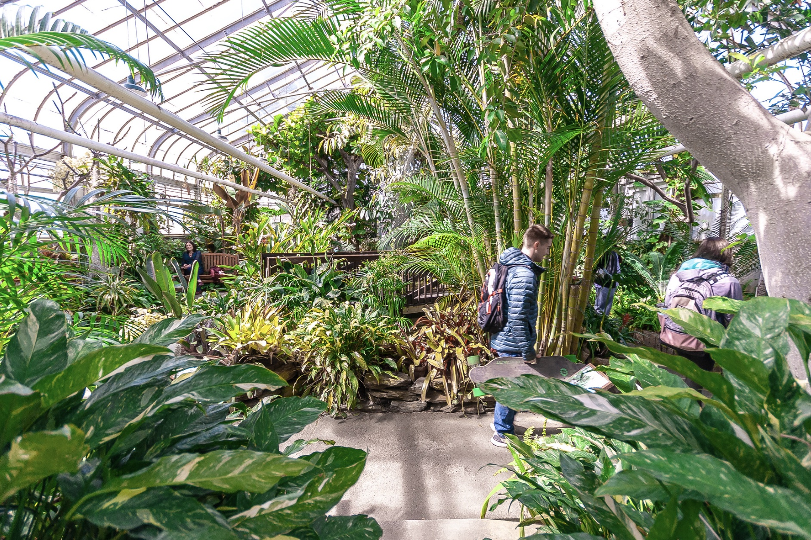
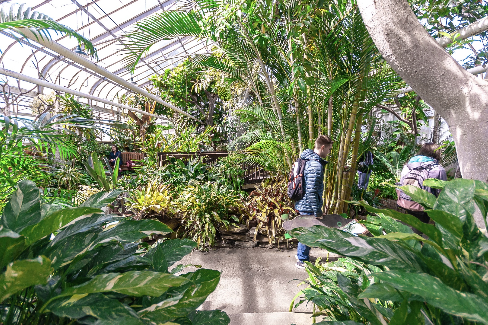
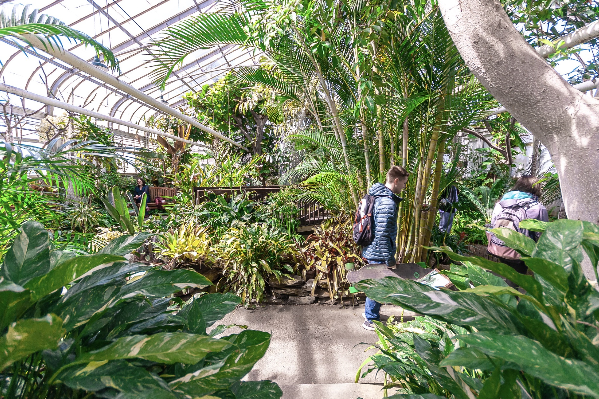

Heres some other photos in case you are looking for it on campus its right next to Frank Dining Commons
 

the Durfee Conservatory at UMass Amherst is an amazing place to be due to its beautiful plants, educational opportunities, relaxing atmosphere, community involvement, and historical significance. (I spent many hours in here right as it opened at 10:00AM and personally found it mesmerizing and relaxing. I intend on one day having a conservatory like this of my own.)
if you wish to return back to the homepage, click here.
